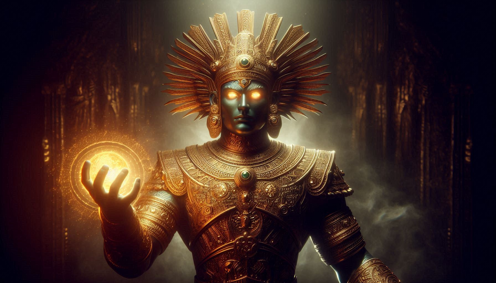
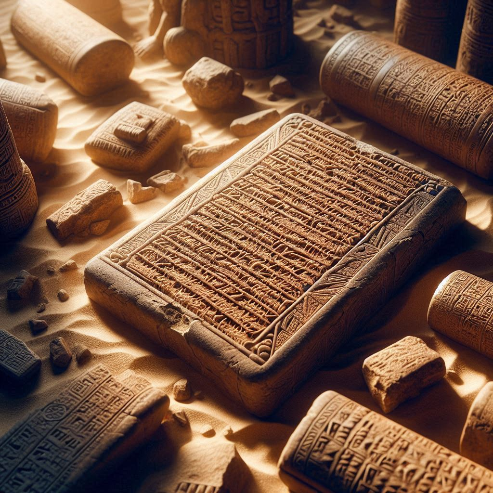
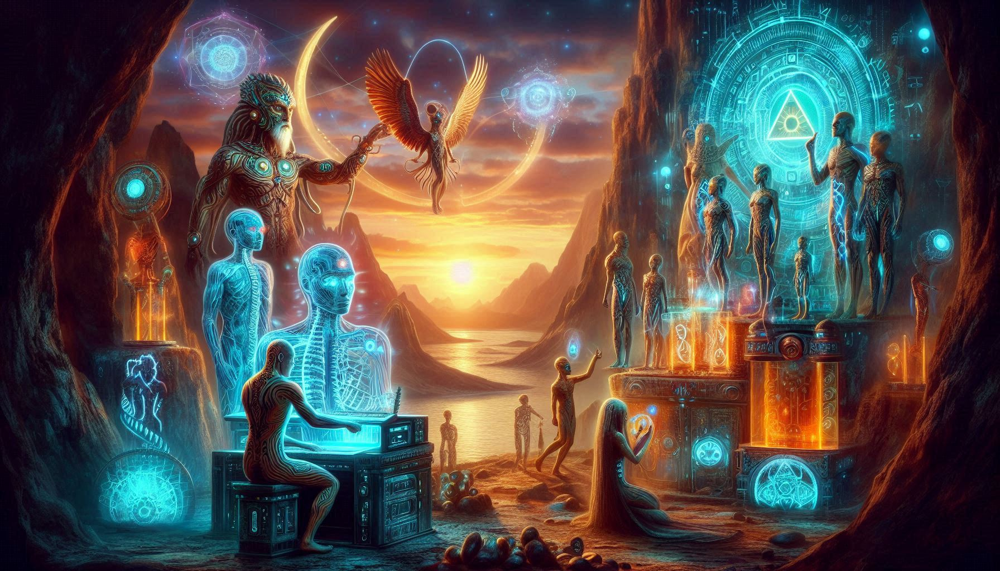

THE DESCENDANTS OF ANU

Anunnaki ennath ancient Mesopotamia-ile (Sumer, Akkad, Assyria, Babylon) gods-ine vilikkunna name aanu. Sumerian language-il "Anunnaki" ennal "Princely offspring" athayath sky god aaya 'An'-inte makkal ennartham.
Mainstream historians ivare verum "mythology" aayi kaanumpol, modern researchers (like Zecharia Sitchin) parayunnath ivar extraterrestrial beings (aliens) aanu ennanu.
Anunnaki-il ellavarum ore pole powerful alla. Ivarude idayil oru hierarchy undayirunnu:
| NAME | ROLE / DOMAIN | REPRESENTATION |
|---|---|---|
| Anu | King of Gods / Sky God | The supreme authority in heaven. |
| Enlil | Lord of Air & Storms | The one who held the "Tablets of Destiny." |
| Enki (Ea) | God of Wisdom & Water | Supporter of humans & Master of Magic. |
| Inanna | Goddess of Love & War | Associated with the Planet Venus. |

Theory prakaram, Anunnaki vannath Nibiru (Planet X) enna oru planet-il ninn aanu. Ithinte orbit nammude Solar System-il 3,600 years koodumpol aanu path cheyyunnath.
Mining for Survival:
Nibiru-vinte atmosphere protect cheyyan Gold avashyamayirunnu.
Athu mine cheyyan vendiyanu avar Earth-ilekk vannath ennu tablets translate cheytha chila experts claim cheyyunnu.

Ithu aanu ettavum charcha cheyyappedunna part. Earth-il gold mining cheyyan labor force-ine venamayirunnu. Athinayi Enki (the scientist god) "Homo Erectus"-nte DNA-il Anunnaki DNA mix cheythu Homo Sapiens (Modern Humans) create cheythu ennanu theory.
👉 The Missing Link: Evolution-ile gaps fill cheyyan ithu oru kaaranam aayi pala conspiracy theorists-um parayunnu. 👉 Adapa: Sumerian myths-il parayunna first "civilized" human aanu Adapa (similar to Biblical Adam).
Sumerian tablets-il Rocket ships, Solar System map, pinne biological symbols pole ulla carvings kaanam. Ancient humans-inu ariyatha pala karyangalum Anunnaki padhippichu koduthu ennu karuthappedunnu:
• Astronomy: Planet-ukale kurichulla thulyamillatha arivu.
• Mathematics: Sexagesimal system (60-inte base, ithaanu ippozhum namba seconds/minutes-il use cheyyunnath).
• Architecture: Ziggurats and Pyramids build cheyyulla advanced knowledge.
Ippoze theories parayunnath:
• Bloodlines: Anunnaki bloodlines ippozhum world-ine lead cheyyunna leaders-inte idayil undennu parayappedunnu.
• The Return: Nibiru thirichu varumpol avar return cheyyum ennu pala ancient calendars-il mention cheyyunnu.
• The Igigi: Anunnaki-ude idayile 'working class' gods (Igigi) earth-il hidden bases-il ippozhum undennu parayunnu.
Sathyathil ithu sathyamaano?
1. Archaeologists parayunnu: Sumerians valare creative aayirunnu, avarude stories ellam symbolic mathram aanu.
2. Sitchin’s Translation: Pala scholars-um parayunnu Zecharia Sitchin tablets-ine thirichu translate cheythath aanu, sathyathil athil alien mention illa.
3. Evidence: Verum carvings mathrame ullu, physical aayi oru spacecraft-o alien body-o ippozhu namukku kittiയിട്ടില്ല.
Anunnaki real aliens aano atho devanmaaro? Atho verum imagination aano? Engane aanelum, Sumerian tablets-il ulla info namme athishayippikkunnu. The universe is a mystery, and maybe we are just a small part of a Universal Experiment.